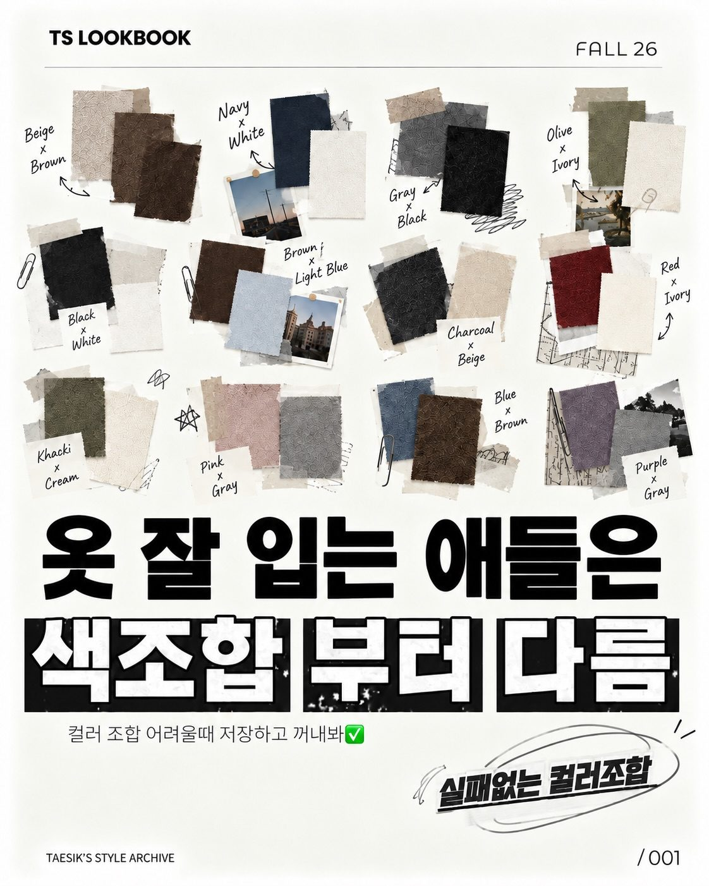

패션 · 인스타그램 · 2026-11-22
가을 코디에 참고하기 좋은 옷 컬러 조합 30가지
TS LOOKBOOK FALL 26이 상하의 색 조합 실패를 줄이도록 베이지×브라운, 네이비×아이보리 등 가을 코디 컬러 조합 30가지를 각 조합의 분위기 설명과 함께 정리했다.

- 베이지×브라운은 차분하면서도 따뜻한 분위기로 가을에 가장 많이 찾는 조합으로 소개된다.
- 네이비×아이보리는 깔끔하고 세련된 느낌으로 어떤 아이템에도 쉽게 매치되는 데일리 조합이다.
- 그레이×블랙, 블랙×베이지, 베이지×블랙은 군더더기 없이 시크하거나 모던한 기본 조합으로 실패가 적다고 설명한다.
- 레드×아이보리, 머스타드×네이비, 블랙×레드처럼 포인트 컬러를 더해 단조로운 룩에 변화를 주는 조합도 제시한다.
- 카키×브라운, 브라운×아이보리, 오렌지×카키 등 톤온톤 컬러감의 조합은 가을에 특히 잘 어울린다고 소개한다.
- 핑크×그레이, 퍼플×베이지, 퍼플×그레이처럼 은은하거나 부드러운 포인트 컬러로 트렌디한 분위기를 연출하는 조합도 포함된다.
- 각 조합은 스웨터, 재킷, 와이드 팬츠, 캡, 스니커즈, 가방으로 구성된 착장 예시로 보여준다.